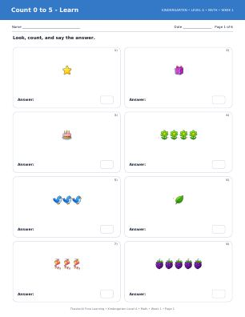

🔢 Math
Print one week at a time
- Week 1Count 0 to 5PDF · 6 pp
- Week 2Write 0 to 5PDF · 6 pp
- Week 3Compare groups to 5PDF · 6 pp
- Week 4Make 5PDF · 6 pp
- Week 5Count 0 to 10PDF · 6 pp
- Week 6Write 0 to 10PDF · 6 pp
- Week 7Compare numbers to 10PDF · 6 pp
- Week 8One more and one lessPDF · 6 pp
- Week 9Sort by color and shapePDF · 6 pp
- Week 10Patterns AB and AABPDF · 6 pp
- Week 11Shapes around usPDF · 6 pp
- Week 12Position wordsPDF · 6 pp
- Week 13Add within 5PDF · 6 pp
- Week 14Addition storiesPDF · 6 pp
- Week 15Subtract within 5PDF · 6 pp
- Week 16Subtraction storiesPDF · 6 pp
- Week 17Make 10PDF · 6 pp
- Week 18Teen numbers 11 to 15PDF · 6 pp
- Week 19Teen numbers 16 to 20PDF · 6 pp
- Week 20Count to 20PDF · 6 pp
- Week 21Compare to 20PDF · 6 pp
- Week 22Length and heightPDF · 6 pp
- Week 23Weight and capacityPDF · 6 pp
- Week 24Time and daily orderPDF · 6 pp
- Week 25Coins and money awarenessPDF · 6 pp
- Week 26Level A math mastery reviewPDF · 6 pp